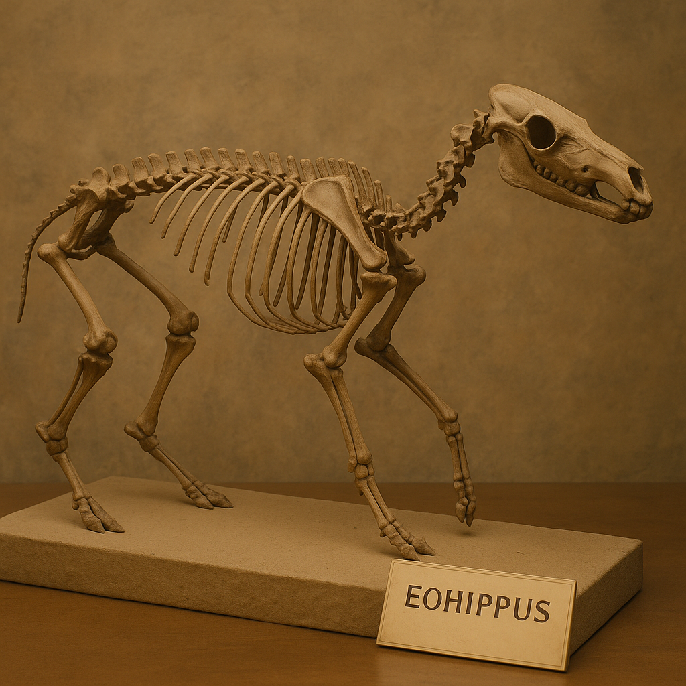
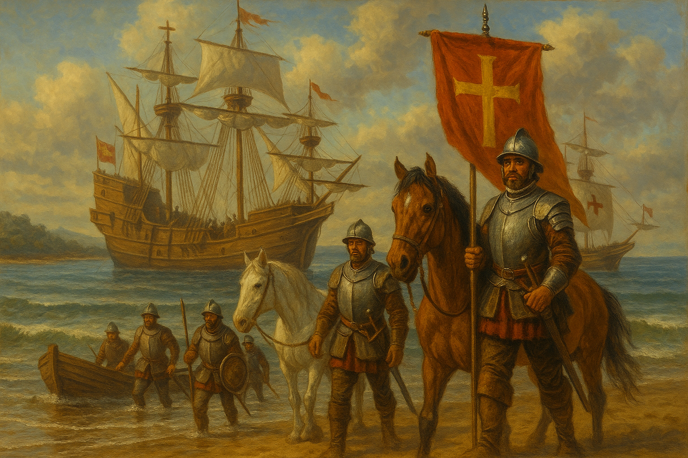
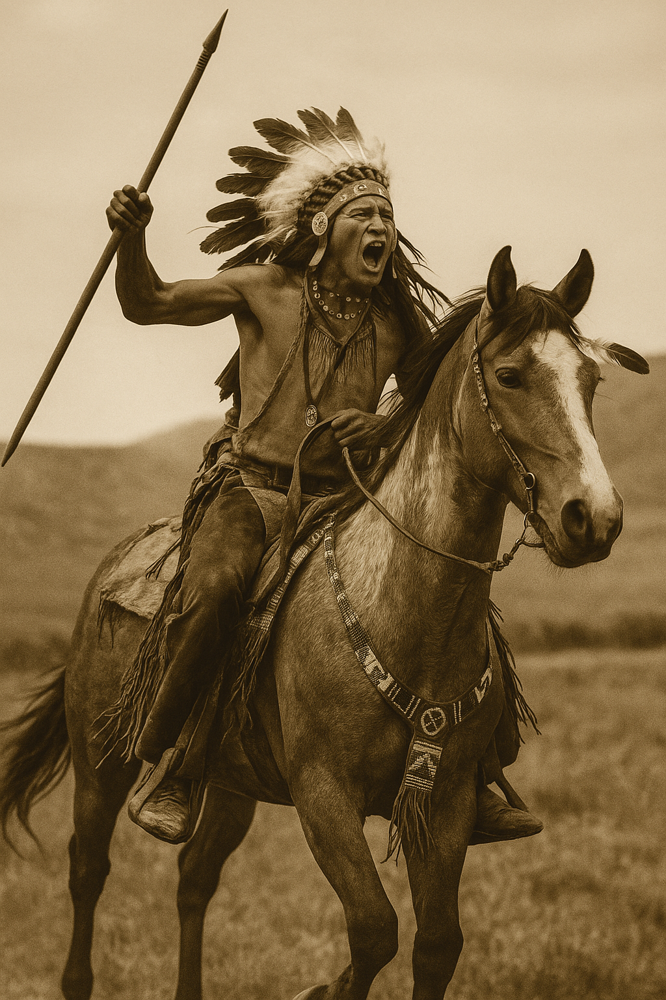
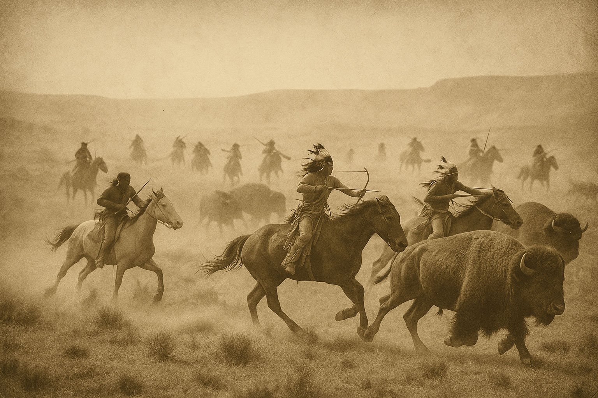
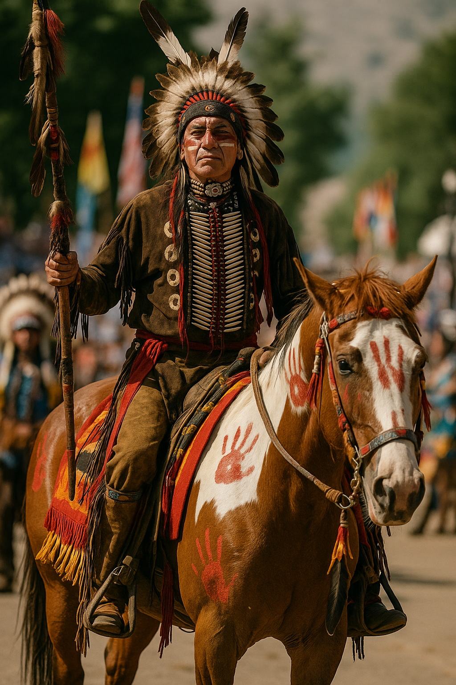

The Return of the Horse: From Extinction to Transformation
The modern horse (Equus ferus) first evolved in North America, where it thrived for millions of years. From early ancestors like the small, forest-dwelling Eohippus to full-sized Ice Age horses, the continent was once rich with equine species. But around 10,000 years ago, they disappeared. Most scientists agree that their extinction was likely caused by a combination of climate change and overhunting by early humans.
For the next several thousand years, the Americas had no horses at all. Indigenous societies developed complex systems of trade, migration, and warfare entirely on foot — aided in some areas by dogs, but without the speed, strength, or load-carrying power of the horse. Across the vast plains, deserts, and mountains of North America, the land remained quiet of hooves.

The Spanish Bring Horses Back
The horse’s reintroduction began in 1493, when Christopher Columbus brought a small group of horses to the Caribbean island of Hispaniola during his second voyage. These early imports were mostly Andalusian, Barb, and Jennet horses — compact, hardy breeds favoured by the Spanish for their endurance and maneuverability.
By the early 1500s, Spanish expeditions were bringing horses to mainland Mexico and into what is now the American Southwest. Horses were integral to Spanish military and colonial operations. They gave mounted soldiers a major tactical advantage in battle and served as beasts of burden in agriculture, mining, and long-distance travel.
But the Spanish didn’t keep full control of their horses. Some animals escaped during expeditions; others were abandoned after conflicts or stolen during raids. In the open country of the Southwest, these free-ranging horses adapted quickly and began forming feral herds. Tough and resilient, they spread northward, their descendants becoming the foundation of the wild mustang populations that still roam parts of the western United States today.

The Rise of the Horse Nation
By the mid-1500s, horses were roaming freely across parts of northern Mexico and the Southwest. The first Indigenous groups to encounter and adopt horses were those living near Spanish outposts — including the Pueblo peoples, Apache, Ute, and Shoshone. Through trade, gifting, and raiding, horses began moving from tribe to tribe, carried across landscapes long before European settlers ever made direct contact with the central or northern Plains.
The Comanche were among the first to fully embrace the horse, acquiring them by the early 1600s and transforming almost overnight into a mobile, horse-centred culture. From there, equestrian traditions spread rapidly across the Great Plains. Within a century, tribes such as the Lakota, Cheyenne, Crow, and Blackfoot had become skilled horsemen, building entire lifeways around the animals.

The arrival of the horse was more than a technological upgrade — it reshaped the structure of daily life. Horses made buffalo hunting far more efficient, allowing riders to track and surround herds with speed and precision. They revolutionised warfare, enabling fast-moving raids, strategic retreats, and new mounted combat tactics. Trade networks expanded dramatically as horses enabled greater mobility across vast distances. Horse ownership also became a symbol of wealth and prestige; large herds were a source of both social standing and economic power.
"For many Indigenous cultures, the horse was not viewed as an imported tool of the Spanish but as a powerful spirit being — a creature that had returned to the land."

Riding Traditions and Gear
While early Native riders initially adopted Spanish-style gear, including hackamores (bitless bridles), rawhide reins, and simple saddles, most groups quickly modified their equipment to suit their needs. Many rode bareback or used pad saddles made of hide and woven fibre, which allowed for closer contact and better control of the horse.
Bridles and halters were often decorated with beads, quills, fringe, and feathers — both for beauty and symbolic significance. Horses themselves were painted for battle or ceremony, with certain colours and patterns believed to offer protection or enhance the horse’s spiritual power. Riders developed advanced techniques, such as hanging off the side of the horse during battle to avoid enemy fire — a tactic that required extraordinary balance and trust between rider and mount.
Horse training began young. Children often learned to ride at an early age, and horsemanship became a central part of life, identity, and skill for many Plains nations.

The Horse Comes Home
Though brought back to the continent by European colonisers, the horse was quickly and thoroughly transformed by Indigenous cultures. Across the West, Native nations redefined what the horse could be — not just a mode of transport or tool of war, but a companion, a status symbol, and a cultural touchstone.
By the mid-1700s, horse culture was firmly established among dozens of tribes. By the 1800s, Indigenous horsemen were considered among the finest in the world. The Comanche alone controlled some of the most formidable equestrian fighting forces on earth, their methods studied and feared by both Spanish colonial powers and the expanding United States army.
In many ways, the horse didn’t simply return to North America — it returned home. And in doing so, it helped shape one of the most dynamic and resilient chapters in Native history.
Related Stories

Lords of the Southern Plains: The Rise and Fall of the Comanche Horse Nation
For the Comanche, the horse was not a means of travel but the foundation of warfare, survival, and freedom. On the Southern Plains, they forged a style of horsemanship so effective it reshaped power, territory, and life itself.

Escaramuza: Women, Horses, and Tradition in Mexico’s Arena
Set to music and performed at full gallop, Escaramuza brings eight riders into the arena as a single unit. More than spectacle, it is a disciplined team sport shaped by tradition and heritage.
.jpg)
The Side Saddle: An Evolution Shaped by Constraint, Craft, and Culture
The side saddle was not a decorative tradition but a technical response to social constraint. This article traces its evolution from medieval Europe to its peak in British hunting.